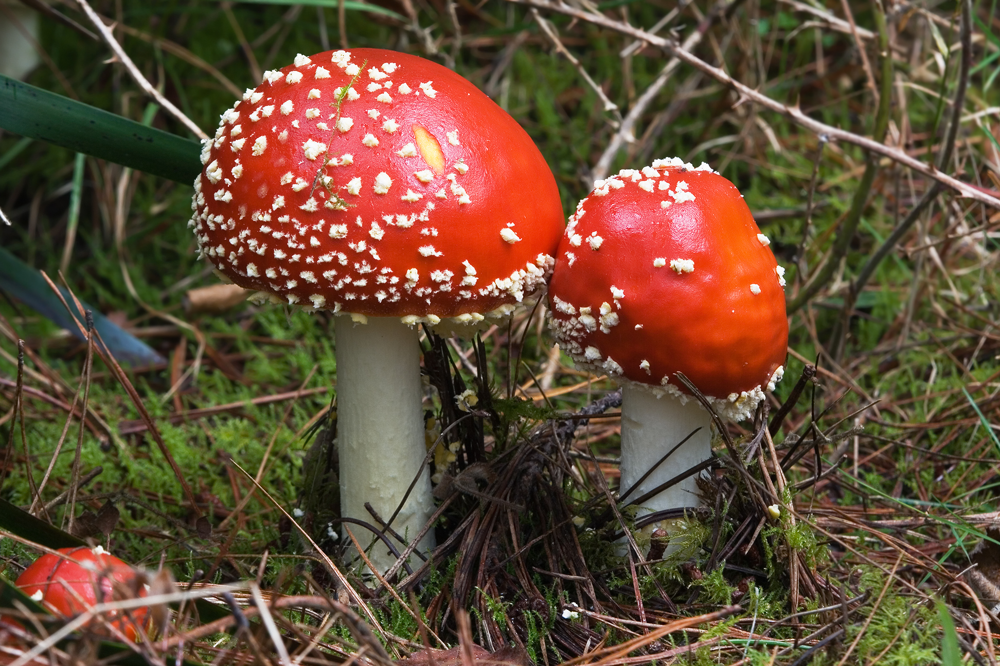

Amanita muscaria is a cosmopolitan mushroom, native to conifer and deciduous woodlands throughout the temperate and boreal regions of the Northern Hemisphere, including higher elevations of warmer latitudes in regions such as Hindu Kush, the Mediterranean and also Central America. A recent molecular study proposes that it had an ancestral origin in the Siberian–Beringian region in the Tertiary period, before radiating outwards across Asia, Europe and North America. The season for fruiting varies in different climates: fruiting occurs in summer and autumn across most of North America, but later in autumn and early winter on the Pacific coast. This species is often found in similar locations to Boletus edulis, and may appear in fairy rings. Conveyed with pine seedlings, it has been widely transported into the southern hemisphere, including Australia, New Zealand, South Africa and South America, where it can be found in the southern Brazilian states of Paraná and Rio Grande do Sul. Ectomycorrhizal, Amanita muscaria forms symbiotic relationships with many trees, including pine, oak, spruce, fir, birch, and cedar. Commonly seen under introduced trees, A. muscaria is the fungal equivalent of a weed in New Zealand, Tasmania and Victoria, forming new associations with southern beech (Nothofagus). The species is also invading a rainforest in Australia, where it may be displacing the native species. It appears to be spreading northwards, with recent reports placing it near Port Macquarie on the New South Wales north coast. It was recorded under silver birch (Betula pendula) in Manjimup, Western Australia in 2010. Although it has apparently not spread to eucalypts in Australia, it has been recorded associating with them in Portugal. Commonly found throughout the great Southern region of western Australia, it is regularly found growing on Pinus radiata.
